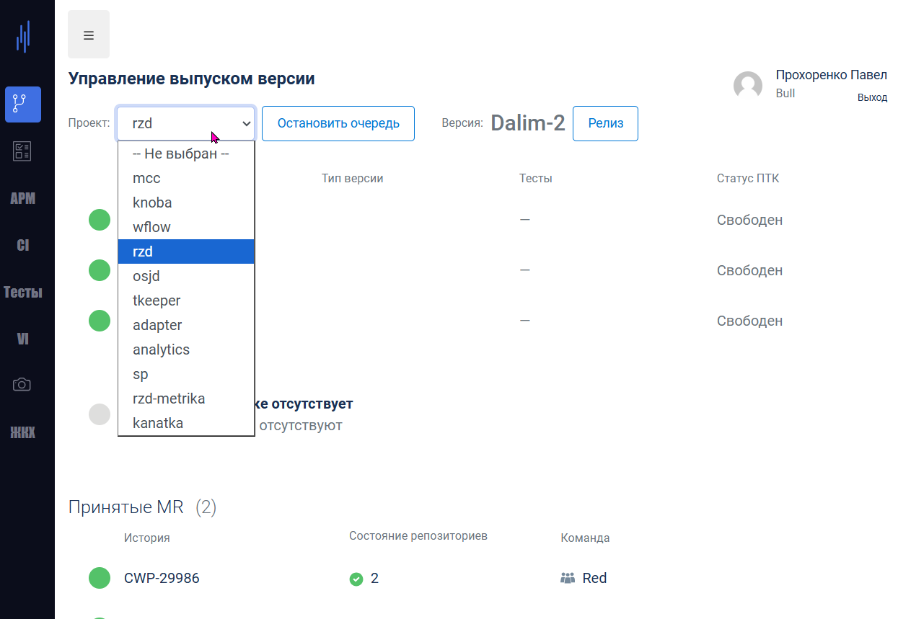
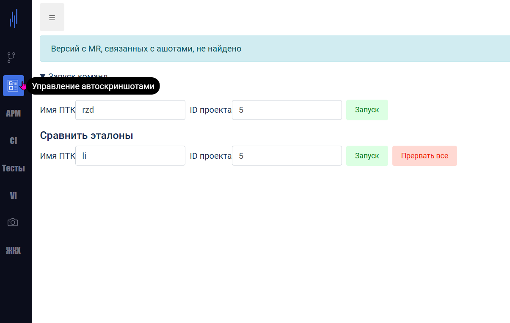
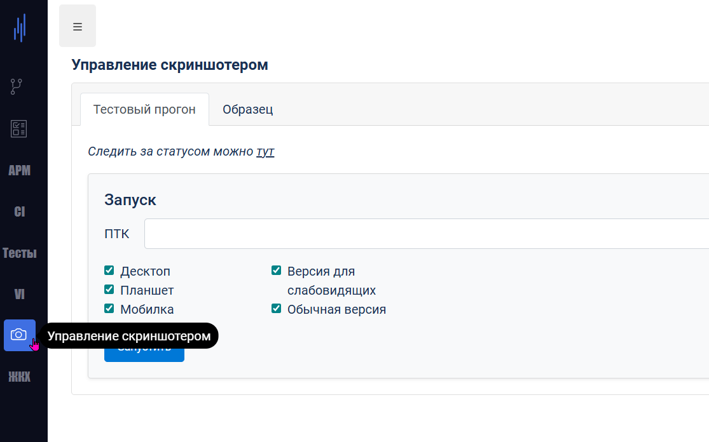
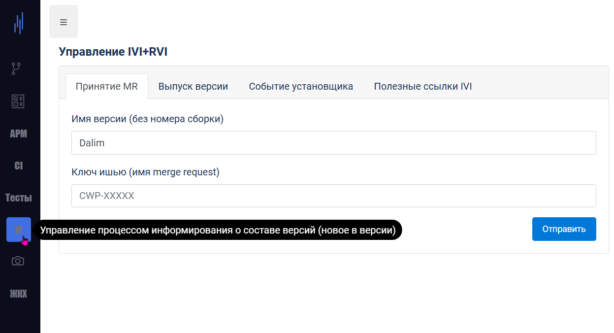
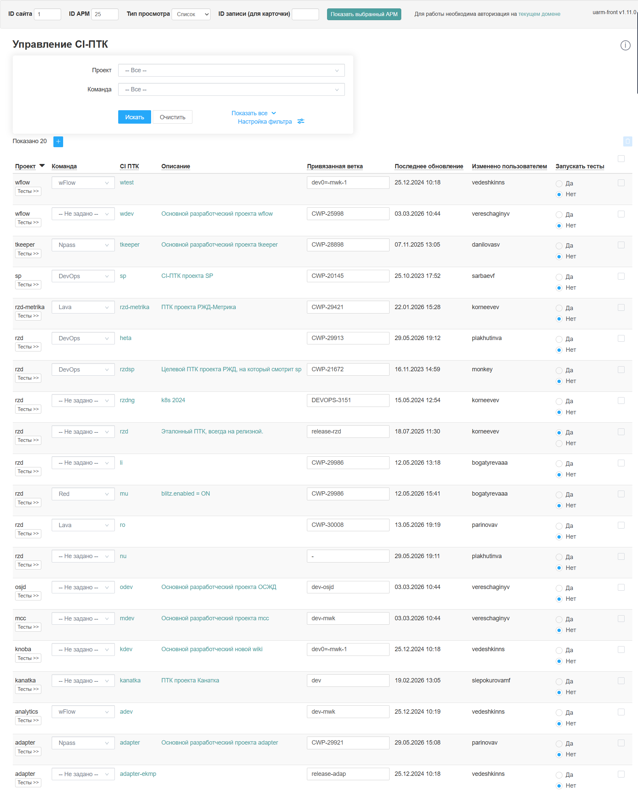
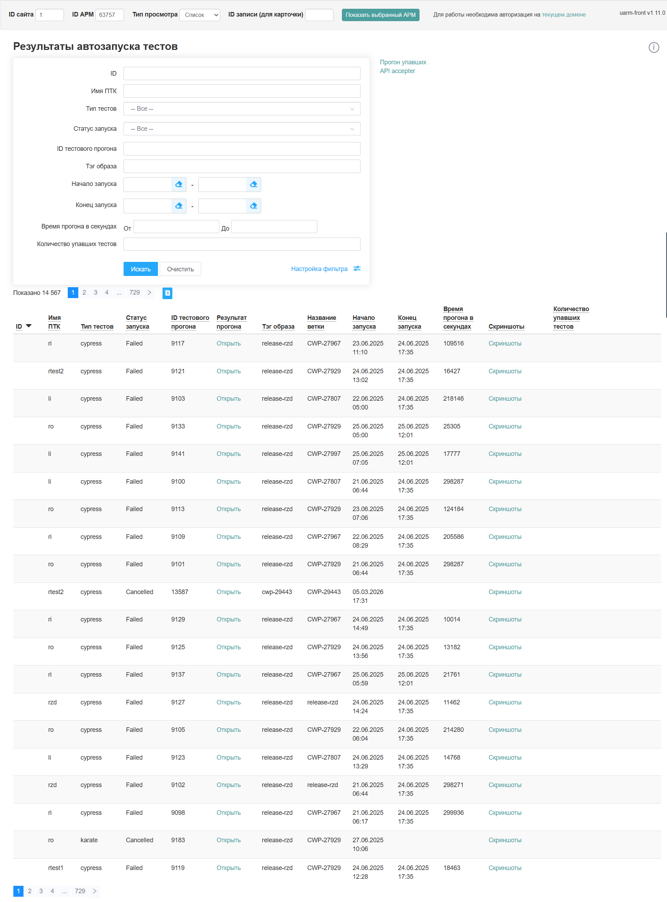

Старший/Ведущий инженер-программист, более 10 лет в высоконагруженных/высокодоступных корпоративных системах.
Технические навыки
- Фронтенд: Vue.js v2 и v3 (с 2016 г.), Vuex, Vue Router, TypeScript, SCSS, Less, TipTap, ProseMirror, D3.js, Chart.js, Vuetify, Quasar
- Бэкенд: Node.js (с 2017 г.), PostgreSQL, Elasticsearch, Redis, Kafka, Express.js
- Десктоп: Electron
- Инфраструктура и доставка: Vite, Rollup, Webpack, Docker, GitLab CI/CD, GitHub Actions
- Тестирование: Jest, Cypress (модульное, компонентное, сквозное);
- Прочее: Системы на основе метаданных, микрофронтенды, публикация NPM-пакетов, модернизация устаревшего кода, инструменты ИИ и интеграция LLM, миграции на TypeScript;
Опыт работы
Прошел путь от младшего до старшего/ведущего разработчика в компании «Российские железные дороги» (RZD.ru), ноябрь 2011 – апрель 2026
Фронтенд


Разработано более 30 фронтенд-приложений на современном стеке:
- Vue.js v2 и v3, Vuex, Vue Router;
- Typescript;
- D3.js, Chart.js;
- Vuetify, Quasar;
- Scss, Less;
Миграция высоконагруженной платформы продажи билетов
Масштаб: более 20 миллионов посещений в месяц, ~150 тысяч оплаченных билетов в день.
Критическая миграция фронтенда с собственного фреймворка на основе jQuery на Vue.js
- Эффект: одно SPA вместо множества страниц. Примерно в 3 раза меньше трафика и нагрузки на сервер, улучшенная производительность, стабильность, UX, удобство сопровождения, скорость выпуска обновлений и современный технологический стек для будущего
-
Решенные сложности:
- Бизнес-логика реализована на фронтенде с помощью JS и серверных шаблонов на основе метаданных;
- Тысячи станций в 11 часовых поясах; междугородние, международные и пригородные поезда и автобусы;
- Десятки дополнительных услуг; поддержка 3 языков;
- Сотни сценариев;
Фронтенд-приложение панели администратора РЖД
Современная замена устаревшей панели администратора
- До: приложение на JSP под IBM WebSphere с хранением состояния (разработано Java-разработчиками);
- После: Современное асинхронное приложение на Vue.js;
- Архитектура: Динамический рендеринг компонентов на основе декларативных метаданных;
- Результат: Значительное улучшение производительности и опыта разработки
- Внедрение: более 1000 пользователей;
- Сложный конвейер сборки;
Скриншоты
Страница панели администратора новостей (список с фильтром)

Страница панели администратора новостей (карточка записи)

Страница панели администратора навигации (список с фильтром)

Страница панели администратора навигации (карточка записи)

wFlow: Приложение для управления проектами в стиле канбан
Фронтенд для управления проектами корпоративного уровня
Внедрение и масштаб:
- Внедрено во всей компании: более 70 пользователей мигрировали с Jira;
- Развернуто в Российском университете транспорта: более 200 пользователей;
Возможности:
- Канбан-доски с перетаскиванием;
- Настраиваемые конфигурации рабочих процессов;
- Настраиваемые поля задач;
- Связывание задач и вложения файлов;
- Собственный WYSIWYG-редактор JSON (на основе TipTap/ProseMirror);
Скриншоты


MCC: Менеджер развертывания/доставки
MCC расшифровывается как Mission Control Center (Центр управления полетами)
Внутреннее приложение, отвечающее за CI/CD: развертывание образов контейнеров, запуск и проверку результатов автоматических тестов, выпуск дистрибутивов программного обеспечения, рецензирование и утверждение запросов на слияние (MR), а также генерацию релизной документации совместно с двумя сервисами Node.js, упомянутыми ниже. Это критически важная часть процесса доставки программного обеспечения в компании, используемая несколькими командами в организации.
Скриншоты






Бэкенд


Имею большой опыт в бэкенд-разработке и управлении инфраструктурой.
Разработал более 7 сервисов на Node.js с:
- Elasticsearch (индексация и поиск);
- Apache Kafka;
- PostgreSQL;
- Redis;
- Express.js / Axios;
- Стратегии «повтор/откат»;
- Аутентификация JWT и LTPA;
- Логирование;
- Генерация DOCx и XLSx;
- Интеграции с различными сторонними API: JSON и XML;
- Все компоненты контейнеризированы
Десктоп
MetaWizard Electron App

Сложное внутреннее десктопное приложение (Windows/Mac/Linux).
- Спроектировано и разработано в 2017 году;
- С тех пор поддерживалось в течение 9 лет, с обновлением до последних версий Electron и Node.js (начиная с 1.x и 0.x соответственно)
Ключевые особенности:
- Редакторы метаданных и списки;
- Подключение к базам данных (Oracle, PostgreSQL);
- Операции SSH/SFTP;
- Сложные файловые операции;
- Многорепозиторная структура с интегрированным приложением панели администратора;
Скриншоты


Инфраструктура


Разработал и сопровождал сложные полные циклы конвейеров для фронтенда и бэкенда:
- Сборка: Vite, Rollup, Webpack, Babel, Eslint, Prettier, Husky, Lint-Staged и т.д.
- Доставка: Docker, GitLab CI/CD, GitHub Actions
Тестирование


Реализовал тестирование для нескольких проектов (фронтенд, бэкенд, десктоп):
- Модульное, компонентное и сквозное тестирование
- Jest и Cypress
NPM-пакеты

- Опубликовано более 10 пользовательских пакетов в частный реестр компании
- Фронтенд и бэкенд, используются в нескольких проектах компании
- Обеспечил различные конвейеры сборки и CI/CD
Архитектура
Разработал различные решения на многодоменной основе: бэкенд (уровень приложений + уровень БД) и фронтенд.
Миграция метаданных
Декларативная система для административных форм и пользовательских страниц
Система метаданных определяет два формата для:
- Более 1000 административных форм: интерфейсы CRUD на основе базы данных;
- Более 500 пользовательских страниц: слой получения данных и композиция компонентов;
Эволюция:
- До: два устаревших XML-формата с множеством обходных решений и специализированных реализаций
- После: две элегантные, легко поддерживаемые JSON-структуры с уменьшенными накладными расходами
-
Разработано:
- Скрипты преобразования для обоих форматов;
- Редакторы форматов для обоих форматов в Electron App;
- Приложение панели администратора;
Пояснение форматов метаданных
Что такое метаданные для административных форм
Эти файлы метаданных представляют собой декларативные JSON-описания, определяющие полный жизненный цикл административной формы — от нижележащих таблиц базы данных до поведения пользовательского интерфейса в браузере.
Это устраняет повторяющийся шаблонный код CRUD, сохраняя согласованность для более чем 1000 форм.
Каждый дескриптор сопоставляет столбцы базы данных (или межтабличные связи) с определениями полей, задающими поведение в трех контекстах:
-
Представление списка
- Фильтрация
- Сам список (отображение, сортировка, редактирование записей на лету)
- Представление формы (создание, редактирование одной записи)
Каждое поле формы может иметь различные типы элементов управления во всех трех контекстах, каждый со своими параметрами, такими как валидация, значения по умолчанию или пользовательский шаблон. Некоторые примеры типов элементов управления:
- Поле ввода (текст, целое число, дробное, email и т.д.) или текстовая область
- Выпадающий список (включая асинхронный поиск), всплывающий выборщик, оба могут использоваться для множественного выбора записей
- Дата с временем или без, в контексте фильтра может использоваться как диапазон
- Выбор карты или адреса (геокодер)
- Редактор диаграмм
- ...и некоторые другие
Что такое метаданные для пользовательских страниц
Эти файлы метаданных страниц определяют полную HTML-страницу или слой получения данных (на основе JSON), устраняя необходимость в индивидуальном бэкенд-коде для каждой страницы (всего более 500 страниц).
Компоненты — это детализированные строительные блоки, которые:- Перечисляют поля для выборки
- Назначают первичные ключи
- Определяют связи (один-к-одному, один-ко-многим)
- Обрабатывают пагинацию и фильтрацию
Покрытие TypeScript

Руководил миграцией на TypeScript в нескольких проектах, улучшив качество и сопровождаемость кода, снизив количество ошибок времени выполнения и улучшив опыт разработки.
Инструменты ИИ


Использую различные LLM для различных целей и с разными подходами.
Поддерживаю баланс между контролем над кодом и скоростью разработки.
Когда это применимо — практикую агентные рабочие процессы и разработку на основе спецификаций (Openspec).
Для других целей — конечно: предложения, настройка, документация, отладка, тестирование, быстрое прототипирование и т.д.
Образование
Степень бакалавра по геологической инженерии
Российский университет дружбы народов (РУДН), Москва, Россия, 2005 – 2009
Языковые навыки
Свободное владение английским, родной русский, начальный уровень немецкого, французского и украинского.
Местоположение
С 2013 года работаю удаленно, сейчас нахожусь в Таиланде. Очень гибкий в отношении часовых поясов (до GMT+1).
Открыт к гибридной работе при необходимости, а также к переезду/работе в офисе.
Мои приоритеты
- Командная работа — Сотрудничество, постоянное обучение и обмен знаниями с другими, включая наставничество и руководство
- Ясный дизайн — Архитектура, задачи, код и т.д.
- Создание решений — Либо поддерживаемые приложения на годы вперед, либо быстрые PoC/MVP
- Баланс — Бизнес-цели (первый приоритет), опыт разработки и управление техническим долгом